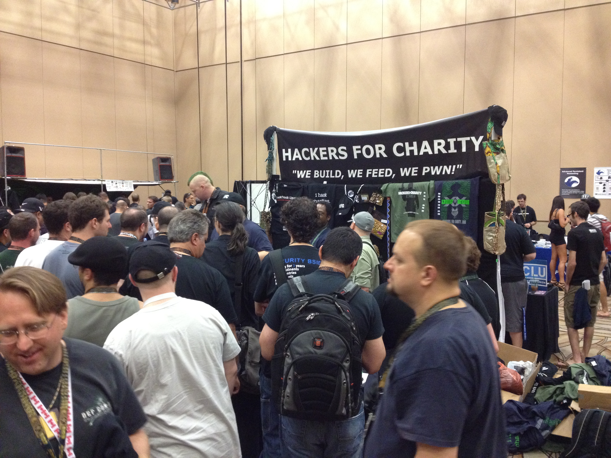
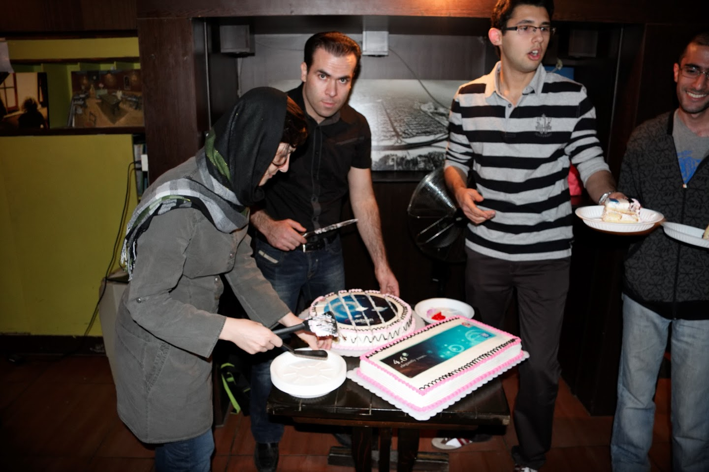
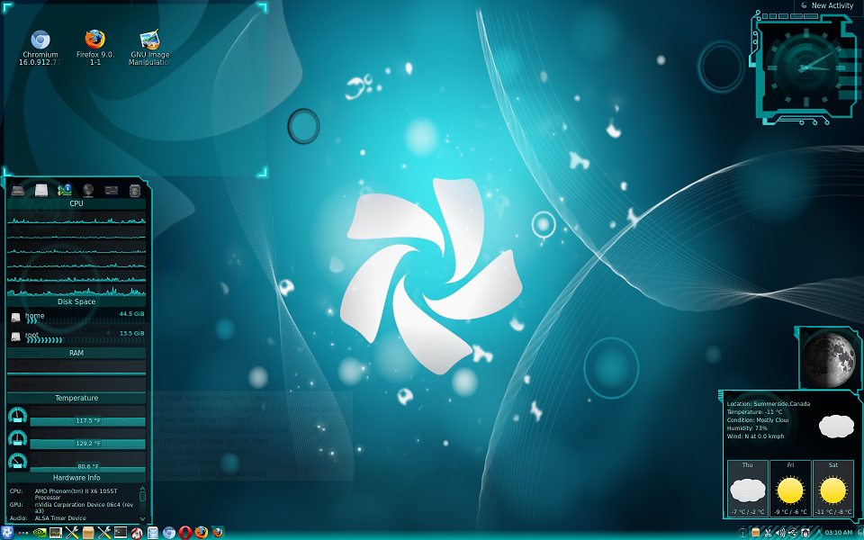
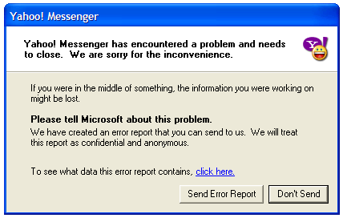
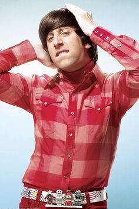

be THE community
Jadi.net
jadi.net/podcast
jadi.net/videcast
twitter.com/jadijadi.net/videcast
:)

Freedom is larger than 0s&1s
- use FOSS
- add to FOSS (tech/non-tech)
- be the Community
Non-Tech
- Translate / check localizations
- Documentation
- Artworks (say wallpapers, logos, names)
- Evangelism
Evangelism
Artwork
Tech
- Test α & β Releases
- Report & Follow bugs
- Documentation
- IRC / Forums / ...
- Code!
Bugs
Documentation

Be THE Community
Be...
- 
- Cool
- Wise
- Clean
- Safe
- Welcoming
- & ...
Have courage
شروع کنید
- جایی پیدا کردین کیف رو بذارین؟
- ناهار چیه؟
- راستش من یکبار رفتم خودم رو به یک گروه معرفی کردم و نتیجه اش خیلی جالب شد... می خوام اینو بازم تست کنم!
- چه تی شرت قشنگی
- «اوه منم این جاها همیشه کفش اسپرت می پوشم!»
- شما شیرازی هستین؟
شما بهترین هستین
- می شه منم بیام سراغ این میز؟ به نظر غذاهاش خوشمزه است / آدم هاش باحالن / بحث هاش جالبه / ...
- آدم که همه اش نباید با همکارهاش حرف بزنه! اونها رو که همیشه می بینم! شما نمی خواین با یک آدم جدید گپ بزنین؟ (:
- به نظر میرسه شما باحالترین گروه هستین. می شه منم با شما باشم؟
- نظر شما در مورد گو/تیندر/توییتر/... چیه؟
- شما هم با وای فای مشکل دارین؟
?
www.Jadi.net